Staffing
Der Einstieg, wenn du passende Menschen für Aufgaben in deinem Unternehmen suchst.
Staffing & Managementberatung · Eine Marke der wescaleIT AG
Silverback ist die Marke der wescaleIT AG für Staffing und Managementberatung. Sie ist der Einstieg für Unternehmen, die passende Menschen für ihre Aufgaben suchen oder Unterstützung bei Managementthemen benötigen.
Zu Silverback
Wofür die Marke steht
Manchmal fehlt die passende Verstärkung für ein Team. Manchmal braucht ein Vorhaben zusätzliche Erfahrung in der Steuerung oder eine neue Perspektive auf eine Managementfrage. Silverback bündelt diese Themen in einem eigenen Markenauftritt und erleichtert so den Weg zum passenden fachlichen Gespräch.
Silverback richtet sich an Unternehmen, Führungskräfte und Projektverantwortliche mit Personalbedarf oder einem Anliegen in der Managementberatung.
Deine Orientierung
Der Einstieg, wenn du passende Menschen für Aufgaben in deinem Unternehmen suchst.
Die Anlaufstelle für Fragen zu Führung, Organisation und der Steuerung von Vorhaben.
Welche Unterstützung passt, hängt von deiner Aufgabe und deinem Umfeld ab. Die fachliche Abstimmung findet bei Silverback statt.
Die Verbindung zu wescaleIT
Silverback macht den Schwerpunkt Staffing und Managementberatung als eigene Marke sichtbar. Das gemeinsame Unternehmen dahinter ist die wescaleIT AG. Unternehmenskultur, Team und Karriere haben deshalb weiterhin hier ihren Platz.
Dein nächster Schritt
Der fachliche Einstieg erfolgt über Silverback. Für Fragen zum Unternehmen erreichst du die wescaleIT AG über unseren Kontaktbereich.